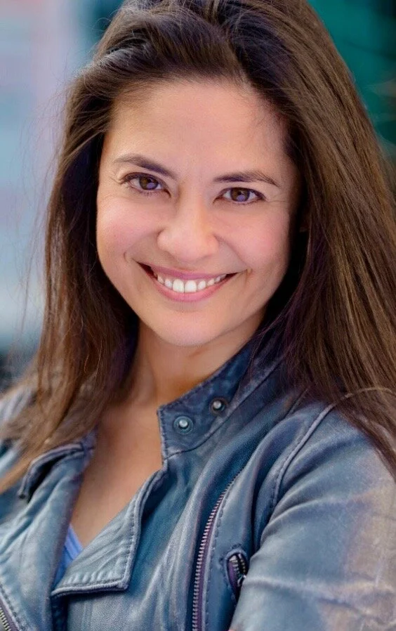
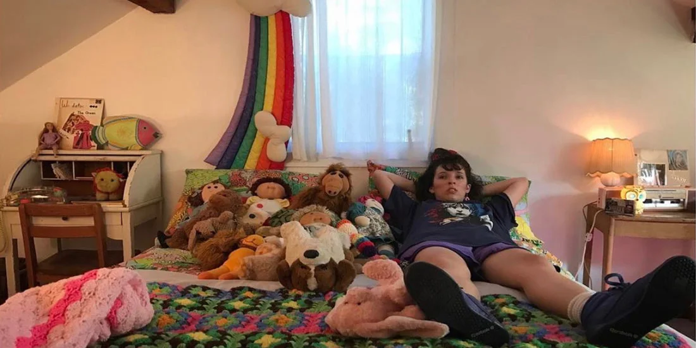

There is a yearning for stories of all genres that reflect the rich experience of all people—it has never been more pronounced. Pass the Mic Media is a production and consulting outfit designed to meet that need.
We bring a level of conscious thought and decision making to ensure production is inclusive and equitable and content is responsibly researched and portrayed. Whether advising on a script in development or the hiring and training of teams coming to work on a project, thoughtful consideration at each phase is great for the story and for your bottom line.

I am a producer, consultant and facilitator with over 20 years experience in film, theater and finance. I have a long history of building inclusive teams and spaces through a lens of cross cultural understanding and a keen understanding of the artistic process.
I began as a theater artist in New York. In the aftermath of 9/11, I felt driven to identify and nourish a Middle Eastern theater community. I learned how to identify artists, tell nuanced, difficult stories for mixed audiences, and build pipelines for both creation and distribution that centered on quality AND equality.
In 2010, I co-founded Noor Theatre, and in 2016 we received an OBIE award recognizing our work "...to change the dialogue. To engage, enlighten, as well as entertain, while shining a light on a culture that most Americans know only through media stereotypes."
I remain dedicated to engaging, enlightening and entertaining. Creating space for underrepresented artists is my passion. Ensuring the entire scaffolding supports their work is central to my mission.
This is more than just fleeting moments of shared experience between artists and audiences. It can be long term, sustainable power sharing opportunities for people who are too often left out of "the room where it happens."
In 1980's Woodstock, NY, a 13-year old girl reluctantly prepares for her Bat Mitzvah, but an unexpected encounter with a local girl sends this rite of passage in an unorthodox direction. Written & directed by Justine Wolf Williams. Full length feature currently in development.

A Muslim Arab boy realizes he is different, and his older brother learns to stand by him. Written & directed by Mike Mosallam, this short film sheds light on LGBT issues in a familial, religious space.
UBUNTU is a coming of age story that follows Hakeem & Darren, best friends and star athletes navigating high school. When pushed to face their individual fears, they realize that staying true to themselves while supporting one another is what matters.
There are a variety of ways we can partner:
Download the one-sheet below for more in depth services. And reach out! If we can’t help, we probably know someone who can.